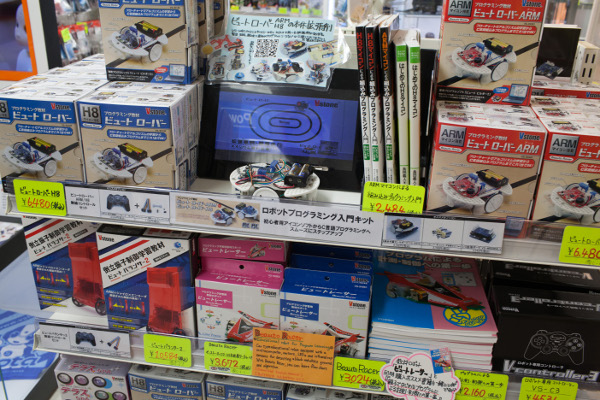
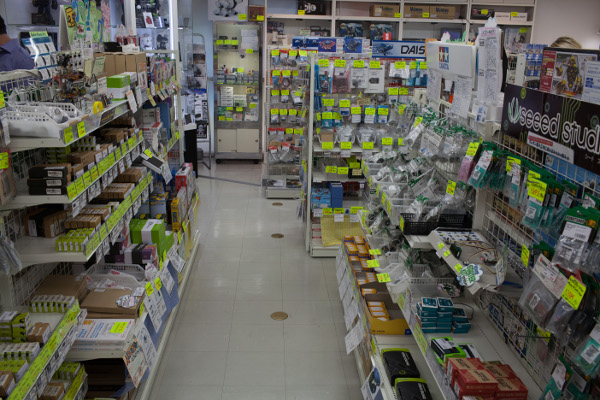
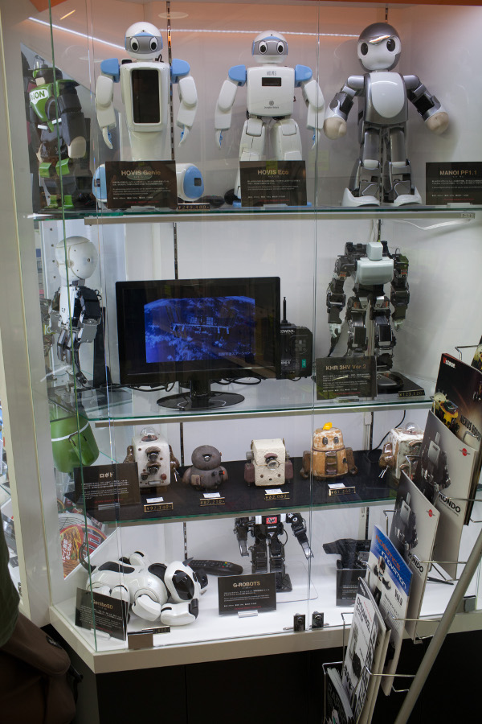
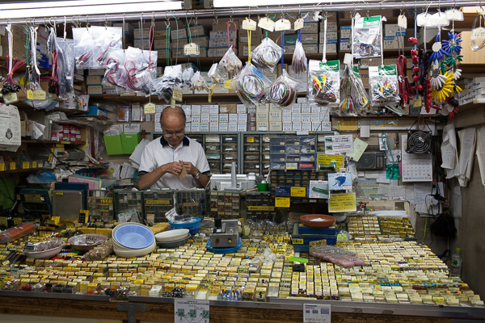
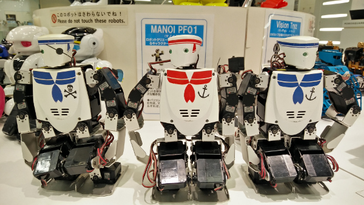
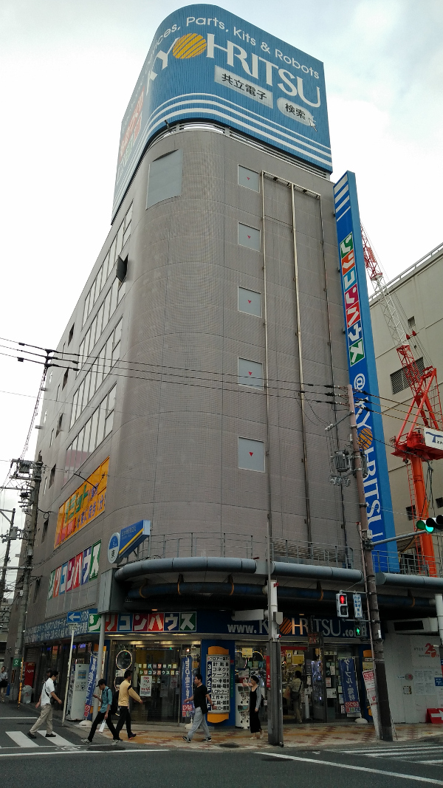
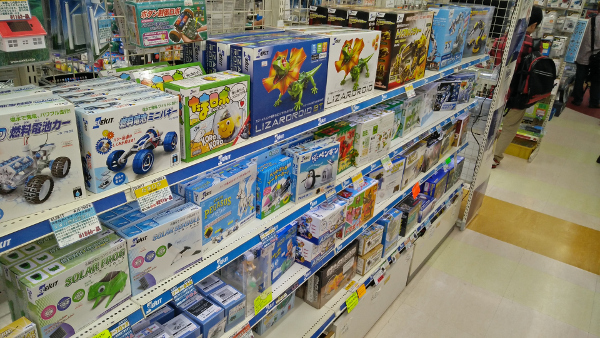
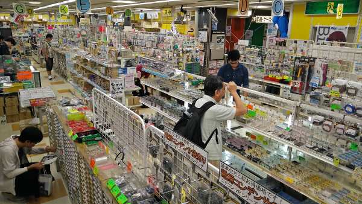

Tokyo
Robot Shop Tokyo, or also known as Tsukumo Robot Kingdom. A bit of a challene as from the outside the shop is located in a non-discript building in Akihabara. During my visit to Japan, this was hands down the most impressive shop of them all, having a nice collection of robots, kits, but also parts (ranging from electronics and mechanics like hard to find omni-wheels in all possible sizes). Very impressive. The shop is not that big actually, but when walking around you get the feeling these guys really know what they are doing.


Robot Aisle Tokyo This shop is like the others an RT-shop, and has some nice kits that could not be found elsewhere as far as I have seen. The shop also has an assembly space where staff can help you work out your challenges. The shop is quite small, but when you're in Akhibabara, it's close to the other two shops mentioned here. It's actually below the railway tracks, in a small shopping mall named Radiocenter, but not to be confused with the radio department store mentioned below. You can find other electronic components shops in this mall as well. See Google maps below to locate is.
Tokyo Radio Department Shops This is not a robot shop, but still an amazing place for electronics parts. It is a 4 story shopping mall. This beats all internetshops to be honest. It's located in the same street as the robot shop mentioned earlier. Note that there's another shop called Radio Store which is completely different and not that special.

Fukuoka
Robosquare Fukuoka Again here, you need to do some planning to make sure you arrive at the rigt place, and know where to go, as the building (The TNC TV Building) is located somewhat outside the center. It is part of the floorspace on the second floor of the building, which aims to show some history of Japan's consumer robots, and has also a small shop corner. Some demo's were given by staff, for instance the famous Aibo robot. It's the least hard-core of what I've seen in Japan, but fun to visit at least when you're on the way to Nagasaki for instance. Combine it with tasting ramen in the city, and you're fine. Fukuoka was a nice city to spend some time as well.
Osaka
Kyohritsu Osaka Hardest to find actually, but an amazing Akihibara style electronics department store in the Nipponbashi, Nihonbashi, or Denden town neighbourhood. It is 3 stories large, with electronic kits and robotics on the ground floor, and electronics parts on the second floor, and if my memory serves well used instrumentation on the 3rd floor, as well as workbenches where staff can help you out with your projects. Robot kits are not that plentiful (not so much mechanics as well), but the electronics kits are worth a look.

